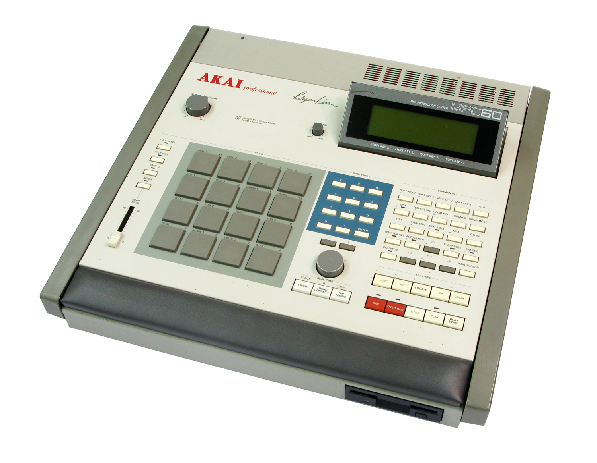
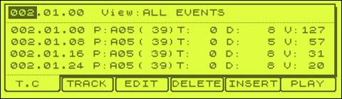

Making beats with Dilla, Bap and the Web Audio API
An introduction to composing music with code , using the browser as sequencer runtime and Javascript to schedule notes with precise rhythmic timing
Basically, we're gonna make beats with code and play them in modern browsers.
#javascript #frontend #nodejs
So, who am I? My dayjob is as a Javascript Developer at 6Wunderkinder here in Berlin, building Wunderlist, home of the worlds lists and tasks.
#webaudio #beatmaking
Aside from that, I'm into making music, mainly instrumental hiphop. Sometimes I'm tweetering and posting stuff on my website.

A decade ago, I layed my hands on an MPC60 for the first time. It was love at first sight, and the reason was not just the 16 pads that everyone holds as the main selling point of a drum machine of this nature.

The MPC had an editable "event view" that captured all aspects of a sequence of notes. For the first time, I - a person with musical interest but no musical talent or training - could reason and talk about the details of beatmaking.
web audio + javascript = <3
Fast forward a decade, and I find myself having fallen in love again. The browser as a sequencer runtime is at its infancy, and I'm excited to be part of hacking the process of making music, as well as being in the position of being able to *build my own instruments*.
Dilla
I wanted to build something small to get me started with Web Audio, so I made Dilla - a library to schedule Web Audio events with precise timing and rhythm.
Based on 96 ticks per beat, with position signatures like on MPC:1.1.01 - 1.4.96
I wanted to capture something of what excited me in the first place about the MPC, so this was my starting point: 96 ticks per beat.
Add some notes
dilla.set('kick', [
['1.1.01'],
['1.1.52', { gain: 0.8 }],
['1.3.49']
]);
dilla.set('snare', [
['1.even.01']
]);
This is the main API of Dilla - you attach an array of events with positions to an id, in this case the sound. The snare uses an expression, and will be expanded into two notes: one at 1.2.01, the other at 1.4.01.
Load samples with XHR
var sounds = {};
function loadSound (name, done) {
var request = new XMLHttpRequest();
request.open('GET', 'sounds/' + name + '.wav', true);
// Make sure to set the response type to "arrayBuffer"
request.responseType = 'arraybuffer';
request.onload = function soundWasLoaded () {
ac.decodeAudioData(request.response, function (buffer) {
sounds[name] = buffer;
done();
});
};
request.send();
}
Every sound must be fetched and decoded, and make sure to set the responsetype to arraybuffer.
Listen for step and play sound
dilla.on('step', function onStep (step) {
var source = ac.createBufferSource();
source.buffer = sounds[step.id];
var gainNode = source.gainNode = ac.createGain();
var gainVolume = step.args.gain || 1;
source.connect(gainNode);
gainNode.connect(ac.destination);
gainNode.gain.value = gainVolume;
source.start(step.time);
});
Finally, we listen for Dilla's *step* event to play the sound buffer. In this example, we only care about gain. But really, there are many other params that you would want to be able to control: attack, decay, sustain, release, pan, pitch, etc.
That's a lot of boilerplateI published a few tutorials on how to use Dilla, but quickly realized that it was not powerful enough for me to use myself. Too much repetition and boilerplate - not enough time making beats and sample kits.
Bap
So I did what developers do, abstract. I built another library on top of Dilla, called Bap, after my favourite hiphop subgenre.
A small toolkit for making beats with Javascript and Web Audio for playback in modern browsers
I say making beats, but really, it's all about building kits and instruments from samples and oscillators, and sequencing them.
Inspired by the "MPC workflow" and built to make all aspects of beatmaking completely modular and reusable .
By MPC workflow I mean: find a sample, chop that sample, sequence that sample. I'm not touching pad triggering, yet. Each part of a beat can be its own CommonJS module, allowing for great reusability, and maybe even sharing.
Kit are like instruments and contains infinite slots , each with infinite layers of samples and oscillators
So how does it work. You create a kit - a program in MPC terms, and connect samples and oscillators into slots
Patterns are playable collections of channels containing notes , and connect with kits
The note shorthand
position key duration vol pitch pan
['1.101', 'A2', 49, 75, -50, 100, {...}]
All paramters can be set with an object, but these six are the most imporant: position, key (combination of kit and slot), duration in ticks, volume, pitch and pan.
Kit and oscillator template
var beep = bap.kit();
var basic = bap.oscillator({
attack: 0.001,
release: 0.1,
length: 0.08
});
Clone template to layers in slots
beep.slot(1).layer(basic.with({ frequency: 330 }));
var nextSlot = bap.slot();
var cloned = basic.with({ frequency: 440 });
nextSlot.layer(cloned);
beep.slot(2, nextSlot);
Add notes to pattern and connect
var pattern = bap.pattern({ bars: 2, tempo: 140 });
pattern.channel(1).add(
['*.1.01', 'A1'],
['*.2%1.01', 'A2']
);
pattern.kit('A', beep).start();
Position expressions
*.1.01 > 1.1.01, 2.1.01
*.2%1.01 > 1.2.01, 1.3.01, 1.4.01,
2.2.01, 2.3.01, 2.4.01
even.odd.%24 > 2.1.01, 2.1.25, 2.1.49, 2.1.73,
2.3.01, 2.3.25, 2.3.49, 2.3.73
Make a boombap beat
To explain how Dilla works, I made a tutorial about making a boombap beat.
Make a drum kit
var drumKit = bap.kit();
drumKit.slot(1).layer('sounds/kick.wav');
var snare = bap.sample('sounds/snare.wav');
drumKit.slot(2).layer(snare);
drumKit.slot(3).layer(1, bap.sample({
src: 'sounds/hihat.wav',
volume: 50
}));
Add kick and snare to pattern
var boombapPattern = bap.pattern({ bars: 2, tempo: 90 });
boombapPattern.channel(1).add(
['1.1.01', 'A1'],
['1.1.51', 'A1', null, 80],
['1.1.91', 'A2'],
['1.2.88', 'A1'],
['1.3.75', 'A1'],
['1.3.91', 'A2'],
['1.4.72', 'A1', null, 80],
['2.1.91', 'A2'],
['2.1.51', 'A1', null, 70],
['2.3.51', 'A1', null, 80],
['2.3.88', 'A1'],
['2.4.03', 'A2']
);
Add hihat and play
boombapPattern.channel(2).add(
['*.odd.01', 'A3', null, 70],
['*.even.01', 'A3', null, 80],
['*.4.53', 'A3', null, 60]
);
boombapPattern.kit('A', drumKit).start();
Make a plong kit
var plongKit = bap.kit();
plongKit.slot(1).layer(bap.sample({
src: 'sounds/plong1.wav',
duration: 95
}));
plongKit.slot(2).layer(bap.sample({
src: 'sounds/plong2.wav',
duration: 60
}));
Schedule the plongs
boombapPattern.channel(3).add(
['1.1.01', 'B01'],
['1.4.90', 'B02', null, 40],
['2.1.52', 'B02', null, 70]
);
boombapPattern.kit('B', plongKit).start();
Make a string kit
var stringKit = bap.kit();
stringKit.slot(1).layer(bap.sample({
src: 'sounds/string1.wav',
duration: 90
}));
stringKit.slot(2).layer(bap.sample({
src: 'sounds/string2.wav',
duration: 70
}));
stringKit.slot(3).layer(bap.sample({
src: 'sounds/string3.wav',
duration: 45
}));
Schedule the strings
boombapPattern.channel(4).add(
['1.2.05', 'C03', null, 60],
['1.2.51', 'C03', null, 40],
['1.3.05', 'C03', null, 20],
['1.3.51', 'C03', null, 5],
['1.3.75', 'C01', null, 60],
['1.4.52', 'C01', null, 20],
['2.2.05', 'C03', null, 60],
['2.2.50', 'C02', null, 60],
['2.3.25', 'C01', 70, 60],
['2.4.01', 'C01', 85, 30],
['2.4.75', 'C01', 85, 10]
);
Make a bass kit
var bassKit = bap.kit();
bassKit.slot(1).layer(bap.sample({
src: 'sounds/bass.wav',
attack: 0.01,
release: 0.01
}));
Schedule the bass
boombapPattern.channel(5).add(
['1.1.01', 'D01', 60, 80, -90],
['1.2.72', 'D01', 15, 50, -90],
['1.3.02', 'D01', 40, 80, -90],
['1.4.01', 'D01', 40, 60, -72],
['1.4.51', 'D01', 100, 80, -52],
['2.3.51', 'D01', 60, 80, -116],
['2.4.51', 'D01', 40, 80, -96]
);
Make a kit of slices
var sampleKit = bap.kit();
var base = bap.sample({
src: 'sounds/slices.wav',
attack: 0.01,
release: 0.01
});
sampleKit.slot(1).layer(base.with({
offset: 0.072,
length: 0.719
}));
sampleKit.slot(2).layer(base.with({
offset: 0.9,
length: 0.750
}));
Make a kit of slices
sampleKit.slot(3).layer(base.with({
offset: 1.68,
length: 0.690
}));
sampleKit.slot(4).layer(base.with({
offset: 9.49,
length: 2
}));
Schedule, connect and play
var pattern = bap.pattern({ bars: 2, tempo: 95 });
pattern.channel(1).add(
['1.1.01', 'A1', 96],
['1.2.01', 'A1', 96],
['1.3.01', 'A2'],
['2.1.01', 'A3'],
['2.2.80', 'A4', (96 * 2) + 16 ]
);
pattern.kit('A', sampleKit).start();
Sliced sample demo
0.0.00
Make autosliced kit
var breakKit = bap.sample({
src: 'sounds/esther.wav',
pitch: -26
}).slice(16);
breakKit.slot(1).layer('sounds/kick.wav');
breakKit.slot(2).layer('sounds/snare.wav');
breakKit.slot(4).layer('sounds/snare.wav');
Schedule, connect and play
pattern.channel(2).add(
['1.1.01', 'B1'],
['1.2.01', 'B2'],
['1.3.01', 'B3'],
['1.4.01', 'B4'],
['2.1.01', 'B1'],
['2.2.01', 'B2'],
['2.3.01', 'B8'],
['2.4.01', 'B9'],
['2.4.49', 'B5', 48]
);
pattern.kit('B', breakKit).start();
bapjs.org
That's all we have time for today. Check out the package on npm, read the documentation, build some beats and give me feedback on how it works.
examples.bapjs.org
All examples from today are also online
adamrenklint.com
On my website is the original Dilla tutorial, some more about expressions and piece about how I program drums, called "Lazy kicks and eager snares"
For updates, follow on Twitter
The current version is the first public release, and I have lots of things planned for the near future. If you want to stay updated, follow me on Twitter.
Web Audio Weekly@chrislowis
Finally, an unrelated tip. WebAudioWeekly by Chris Lowis is a semi-regular newsletter with cool links regarding web audio things. Check it out.